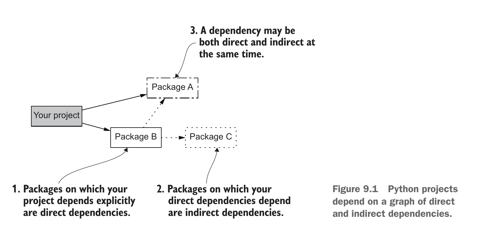
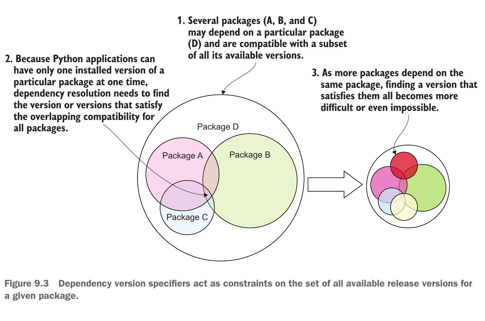
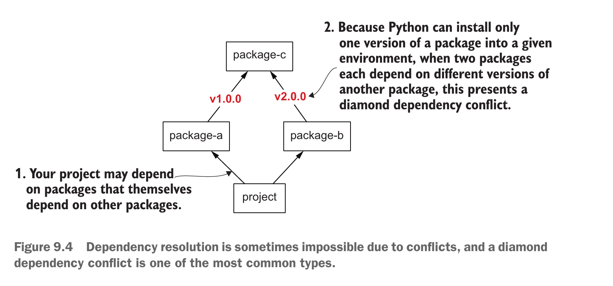

질문 1·2
1 무엇을 직접 요구하는가?
2 공통 설치 후보가 있는가?
WEEK 04 · PROJECT EXECUTION
시작: hello-open-source 저장소
도착: 새 환경의 hello-greet Hee
현재 질문 → 나이브한 시도 → 관찰된 실패 → 해결 → 전후 확인
1 무엇을 직접 요구하는가?
2 공통 설치 후보가 있는가?
3 명령은 어떤 함수로 연결되는가?
4 새 환경에서 무엇을 확인하는가?
STAGE 01 · QUESTION
greeting.py가 이름을 직접 Import하는 termcolor는 hello-open-source의 직접 의존성이다.# src/hello_open_source/greeting.py
from termcolor import colored
def greet(name: str | None) -> str:
return colored(f"Hello, {name or 'world'}!", "green")STAGE 01 · NAIVE ATTEMPT
hello-open-source/pyproject.toml의 [project].dependencies에 필요한 배포 패키지를 적는 일이다. 예를 들어 dependencies = ["B"]는 “이 프로젝트 설치 시 B도 설치해 달라”는 요구다.python -m pip list로 지금 설치된 패키지와 버전을 조회한 결과다. 이는 설치가 끝난 *한 시점의 상태(스냅샷)*이며, 누가 그 패키지를 요구했는지는 말해 주지 않는다.import C가 ModuleNotFoundError를 낸다.pyproject.toml: dependencies = ["B"] → 설치 도구: B와 B가 요구한 C 설치
python -m pip list: B, C → 현재 설치 결과만 확인
B의 새 배포물: C 요구 삭제 → 새 설치에는 B만 포함
내 코드: import C → ModuleNotFoundErrorSTAGE 01 · SOLUTION
project → A·B는 내 pyproject.toml의 [project].dependencies가 직접 요구하는 패키지이고, 점선 B → C·A는 B의 배포물이 요구하는 패키지다.project → C 실선이 없는 상태에서 내 코드가 C를 import한 경우다. B가 C 요구를 지우면 B → C도 사라져 새 설치에서 C를 잃는다.project → C 관계를 만든다. 실제 예시의 C가 termcolor이며, greeting.py가 termcolor를 직접 import하므로 dependencies = ["termcolor"]가 필요하다.그림의 현재 관계: project → B → C, 내 코드 → import C (내 선언 누락)
고친 관계: project → B, project → C, 내 코드 → import C
실제 사례: hello-open-source → termcolor, greeting.py → import termcolor
STAGE 02 · QUESTION

STAGE 02 · NAIVE ATTEMPT
C==1.0.0, B는 C==2.0.0만 허용하면 C의 공통 후보가 없다.
STAGE 02 · SOLUTION
C>=1,<3, B가 C>=2,<4를 허용하면 교집합은 C>=2,<3으로 회복된다.A의 후보: [1.0, 3.0)
B의 후보: [2.0, 4.0)
교집합: [2.0, 3.0)
C 1.9 제외 / C 2.0·2.8 허용 / C 3.0 제외08
venv·pip·실행 명령으로 나누어 수행하고, 어느 환경에 설치했는지도 직접 확인해야 했다.pyproject.toml과, uv가 실제로 선택한 버전을 적은 uv.lock을 함께 둔다. 각 파일과 로컬 환경의 역할은 다음 장에서 추적한다.uv run, 라이브러리 import는 패키지 설치, 어느 폴더에서든 쓸 명령은 uv tool install을 선택한다.두 방법 모두 hello-open-source 저장소 안에서 Hello, Hee!를 얻는다. 아래는 Linux/macOS에서 새 참여자가 실행하는 터미널 명령 수: 4개와 1개를 비교한다.
# 기존 방식: 환경 생성 → 활성화 → 프로젝트 설치 → 실행
python -m venv .venv
source .venv/bin/activate
python -m pip install -e .
python -m hello_open_source.cli Hee
# uv 방식: 필요한 환경을 맞춘 뒤 실행
uv run python -m hello_open_source.cli Hee기존 방식은 네 단계를 사용자가 따로 실행하고, uv는 uv run 한 번으로 환경 준비와 실행을 잇는다. 4개 → 1개는 명령 수이며 설치 속도 배수가 아니다. 버전 고정의 차이는 다음 장에서 확인한다.
09
.venv/ 환경에서 쓰는 Python이다. 둘은 설치된 패키지를 찾는 위치가 다르므로 시스템 Python에 termcolor가 없어도 .venv/에는 있을 수 있다.pyproject.toml은 작성자가 공유하는 *요구 사항*이다. [project].dependencies = ["termcolor"]는 이 패키지가 필요하다는 뜻이며 정확히 어느 버전이 설치됐는지는 말하지 않는다.uv.lock은 uv가 선택한 *정확한 버전 기록*이고, .venv/는 받은 사람 컴퓨터의 *실제 설치 장소*다. 예를 들어 lock이 이 환경에서 termcolor 3.3.0을 선택하면 uv가 .venv/에 그 버전을 설치한다. 저장소에는 앞의 두 파일을 공유하고 .venv/는 각자 만든다.프로젝트 밖 python → 별도 패키지 위치: termcolor 없음
저장소/pyproject.toml → 필요: termcolor
저장소/uv.lock → 이 환경의 선택: 3.3.0 (예시)
저장소/.venv/bin/python → .venv/에 설치된 termcolor 3.3.0 사용uv run 한 번이 수행하는 세 동작pyproject.toml의 요구와 uv.lock이 맞는지 확인한다. 요구가 바뀌었다면 uv가 다시 해결해 lock을 갱신한다. 요구가 그대로라면 새 버전이 나왔다는 이유만으로 매번 바꾸지 않는다..venv/가 없으면 만들고 lock이 선택한 termcolor를 설치한다. ③ 실행: uv run이 시스템 Python 대신 .venv/의 Python을 사용한다. 따라서 시스템 쪽에 termcolor가 없어도 프로젝트 쪽의 설치본으로 인사말을 만든다.pip install -e .는 termcolor가 필요하다는 선언을 읽지만, 별도 고정 없이 설치하면 시점마다 다른 호환 버전을 고를 수 있다. 공유한 uv.lock이 이 환경에서 3.3.0을 기록했다면 uv run은 그 버전을 설치해 이 차이를 막는다. 기존 방식도 별도 잠금 파일이나 정확히 고정한 요구 파일로 해결할 수 있다.uv run python -m hello_open_source.cli Hee
① pyproject.toml ↔ uv.lock 확인
② uv.lock → .venv/ 설치 상태 맞춤
③ .venv의 Python → cli.main() → Hello, Hee!
버전 선택: 고정 없는 pip 설치는 시점마다 달라질 수 있음
공유 uv.lock + uv run은 기록된 3.3.0 사용 (예시)STAGE 03 · QUESTION
src/hello_open_source/cli.py 파일이나 hello_open_source.cli:main 함수 위치다. 사용자가 내부 경로를 외우면 파일을 옮길 때 사용법도 깨진다.Hee를 붙이면 파일이 실행되고 글자 Hee가 인수로 전달된다. 함수가 저절로 선택되지는 않는다. 코드가 인수를 읽고 main()을 호출해야 한다.[project.scripts]에 공개 명령 이름과 호출할 함수를 연결하는 선언이다. uv가 패키지를 설치할 때 이 선언을 읽어 명령 실행 파일(wrapper)을 만든다.| 방식 | 입력과 실행 위치 | 이 예시의 결과·용도 |
|---|---|---|
| 파일 직접 실행 | python src/hello_open_source/cli.py Hee · 개발자 폴더 | 이 예시의 상대 import는 실패할 수 있음. 내부 파일 경로가 필요 |
| 모듈 실행 | uv run python -m hello_open_source.cli Hee · 프로젝트 폴더 | __main__ 호출 코드가 있으면 성공. 모듈 이름을 알아야 함 |
| 공개 명령 실행 | uv run hello-greet Hee · 프로젝트 폴더 | 설치된 wrapper가 main() 호출. 사용자에게 명령 이름만 안내 |
패키지가 배포되었다면 각 사용자가 uv tool install hello-open-source로 설치할 수 있다. 명령 디렉터리가 PATH에 있으면 다른 폴더에서도 hello-greet Hee를 실행한다. 이 표의 세 행은 같은 목표의 다른 실행 방법이지 모두 똑같이 성공하는 예시가 아니다.
STAGE 03 · NAIVE ATTEMPT
src/hello_open_source/cli.py 파일이 있으므로 그 경로를 입력할 수 있다. 그러나 저장소 밖의 사용자는 같은 현재 폴더에 src/가 없다. 아래 두 사람에게 같은 명령을 안내해도 파일을 찾는 위치가 다르다.cli.py는 from .greeting import greet처럼 같은 패키지 안에서 가져오는 상대 import를 쓴다. 파일을 직접 실행하면 Python이 그 파일의 패키지 소속을 모를 수 있어, 파일이 있어도 import가 실패한다.uv run python -m hello_open_source.cli Hee는 프로젝트 환경에서 패키지 이름으로 실행하므로 상대 import를 사용할 수 있다. 설치형 hello-greet는 모듈 이름까지 감춘다.개발자 폴더에서 파일 경로 입력 → 파일은 있음, 상대 import는 실패 가능
사용자 폴더에서 같은 경로 입력 → src/ 파일 자체가 없음
프로젝트 폴더에서 uv run python -m ... → 패키지로 찾아 실행
설치한 뒤 uv run hello-greet Hee → 공개 명령으로 함수 호출파일마다 기능을 하나씩 만들어 직접 실행해도 된다. 다만 상대방에게 내부 파일 경로를 사용법으로 요구한다면 저장소 구조와 현재 폴더가 바뀔 때마다 사용법도 바뀐다.
STAGE 03 · SOLUTION
main()은 터미널의 Hee를 읽어 greet("Hee")를 호출한다. 공개 명령 hello-greet는 사용자가 입력할 이름이다.sys.argv는 ['실행 이름', 'Hee'] 같은 입력 목록이다. sys.argv[1]을 읽는 이유는 이름을 함수에 전달하기 위해서다. __main__ 부분은 10장의 모듈 실행을, 아래 선언은 설치형 명령 실행을 시작한다.# src/hello_open_source/cli.py
import sys
from .greeting import greet
def main() -> int:
name = sys.argv[1] if len(sys.argv) > 1 else None
print(greet(name))
return 0
if __name__ == "__main__":
raise SystemExit(main())hello-open-source/pyproject.toml의 [project.scripts]에서 왼쪽은 사용자 명령, 오른쪽은 설치 도구가 찾을 패키지.모듈:함수다. Wrapper는 설치 때 생성되는 작은 실행 파일로, 오른쪽 함수를 호출하고 반환값을 종료 상태로 전달한다.uv run hello-greet Hee이다. uv가 프로젝트 환경의 wrapper를 실행하고, wrapper가 main()을 호출한다. 출력은 Hello, Hee!, 종료 상태는 0이다.[project.scripts]에 이름별 함수 연결을 여러 줄 적으면 된다.# hello-open-source/pyproject.toml
[project.scripts]
hello-greet = "hello_open_source.cli:main"uv run hello-greet Hee → wrapper → cli.main()
→ greet("Hee") → Hello, Hee! / 종료 0STAGE 04 · 1/4
개발자는 자신의 컴퓨터에서 프로젝트가 실행된다는 사실만으로 공유 성공을 판단할 수 없다. 다른 사람이 저장소를 새 폴더 fresh-hello/에 내려받았다고 가정한다.
새 폴더에는 공유된 pyproject.toml, uv.lock, 소스 코드가 있다. 개발자 컴퓨터에서 만든 .venv/는 없다. .venv/는 설치할 때 각 컴퓨터에서 새로 만드는 프로젝트 전용 환경이다.
cd fresh-hellocd는 셸의 현재 작업 폴더를 바꾸는 명령이다. fresh-hello는 내려받은 저장소의 폴더 이름이다. 다음 명령들은 이 폴더 안에서 실행한다.
확인할 것: 개발자의 기존 .venv/를 복사하지 않아도, uv가 이 저장소의 파일을 읽고 실행 환경을 준비할 수 있는가?
STAGE 04 · 2/4
uv syncuv는 Python 프로젝트의 패키지와 실행 환경을 관리하는 도구다. sync는 이 프로젝트에 필요한 패키지를 .venv/에 맞추는 명령이다.
uv는 pyproject.toml에 적힌 요구 사항과 uv.lock의 선택 버전을 읽는다. 필요하면 잠금 파일을 갱신하고 .venv/를 만든 뒤 패키지를 설치한다. 새 사용자가 버전을 직접 계산하거나 가상환경을 수동으로 활성화할 필요가 없다.
uv pip show --python .venv/bin/python termcoloruv pip show는 설치된 패키지 정보를 보여 준다. --python .venv/bin/python은 조회할 Python을 새 프로젝트 환경으로 지정한다. 마지막의 termcolor는 찾을 패키지 이름이다.
Name: termcolor
Version: 3.3.0
Location: .../fresh-hello/.venv/lib/.../site-packagesName은 이름, Version은 실제 설치 버전, Location은 설치 위치다. 버전은 공유 시점의 uv.lock에 따라 달라질 수 있다.
STAGE 04 · 3/4
uv run hello-greet Hee
echo $?uv run은 필요하면 환경을 맞춘 뒤 프로젝트의 .venv/에서 뒤의 명령을 실행한다. 앞 장의 uv sync를 따로 실행하지 않아도 된다.hello-greet는 pyproject.toml의 [project.scripts]에 등록된 공개 명령이다. 그 선언은 hello_open_source.cli:main 함수를 가리킨다.Hee는 명령에 전달하는 이름 인수다. main()이 이 값을 읽어 인사말을 만든다.Hello, Hee!
00은 echo $?의 결과다.echo는 값을 화면에 출력한다. $?는 셸에 저장된 바로 앞 명령의 종료 상태다. 따라서 실행 직후 곧바로 검사한다.0은 정상 종료, 다른 숫자는 오류를 뜻한다. 인사말이 보여도 종료 상태가 0인지 따로 확인해야 한다.통과: Hello, Hee! 다음에 0이 보인다.
STAGE 04 · 4/4
uv run python -c "import sys, termcolor; print(sys.executable); print(termcolor.__file__)"uv run은 앞 장과 같이 프로젝트 환경에서 실행한다. python은 그 환경의 Python 실행 파일이다.-c는 다음 따옴표 안의 Python 코드를 한 번 실행한다. 따옴표는 공백과 세미콜론을 포함한 코드를 하나의 인수로 묶는다.import sys, termcolor는 두 모듈을 불러온다. ;은 한 줄에서 Python 문장을 나눈다.print(...)는 괄호 안 값을 출력한다. sys.executable은 실행 중인 Python 경로, termcolor.__file__은 불러온 패키지 파일 경로다..../fresh-hello/.venv/bin/python
.../fresh-hello/.venv/lib/.../site-packages/termcolor/__init__.py...는 컴퓨터마다 다른 앞부분이나 Python 버전 폴더를 생략한 표시다. 실제 출력은 전체 경로다. 두 줄 모두 fresh-hello/.venv/ 안에 있으면 개발자의 Python이나 시스템 Python에 의존하지 않고 실행한 것이다.
uv sync 오류: 선언과 잠금 파일을 확인한다.termcolor를 못 찾음: 설치 상태와 [project].dependencies를 확인한다.hello-greet를 못 찾음: [project.scripts] 선언과 프로젝트 설치 상태를 확인한다.17
termcolor를 프로젝트의 직접 의존성으로 선언한다.uv로 새 폴더에 저장소 환경을 복원하고 hello-greet Hee의 출력·종료 상태·실행 경로를 확인한다.uv sync와 uv run hello-greet Hee로 Hello, Hee!와 종료 상태 0을 얻는다. Python과 termcolor의 경로는 새 .venv/를 가리킨다.